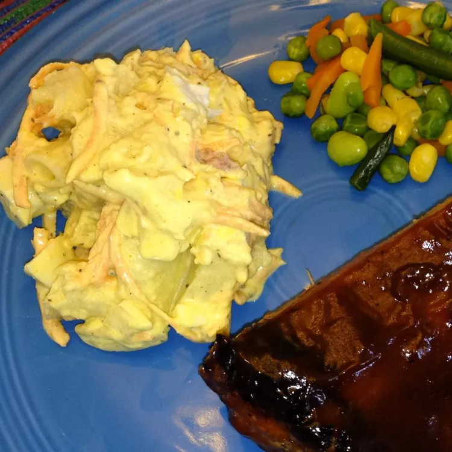

Hawaiian Potato Mac Salad

Description
I grew up eating standard mac salad and potato salad. It wasn't until I got with my husband and had some potato mac salad that I realized the best of both worlds could exist!
It's a local Hawaiian mix plate side favorite of potato mac salad. I think people make it differently, just like potato salad can be made in 101 da kine ways. This is my easy and favorite version of ono (tasty) potato mac.
Ingredients
- 5 eggs
- 7 large potatoes, peeled and cubed
- 1 Cup elbow macaroni
- 3 Cups mayonnaise
- 1 Teaspoon celery seed
- 1 1/2 Teaspoons curry powder
- 2 Cups grated carrots
- 1 Cup frozen green peas, cooked and drained
- 1 small sweet onion, finely chopped
- salt and black pepper to taste
- optional:1 Tablespoon sherry vinegar
Steps
- Hard boil eggs and chop.
- Boil potatoes for 15 minutes, drain and place in refridgerator to cool.
- Make pasta until cooked through but firm to the bite. This typically takes about 8 minutes.
- Whisk together mayonnaise, vinegar, curry powder, celery seed and salt and pepper.
- Combine cooled potatoes, macaroni, eggs, carrot peas and onion in a large bowl.
- Carefully stir in dressing; cover and refridgerate overnight before serving.